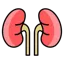

Mineral Grimoire
 Heulandite
Heulandite

KidneysHeulandite is a zeolite-family mineral crystallizing in the Monoclinic system with a Mohs hardness of 3.5 to 4. This gleaming gem carries powerful ties to primordial worlds and is considered one of the crystal keys capable of unlocking the mysteries and wisdom of the Atlantean root race. It comes primarily in pink and green, both of which resonate with the Heart Chakra.
Appearance
Crystalline to vitreous opaque pearly crystals on a matrix, easily obtained. Occurs in white, pink, and green varieties, each working on different physical and subtle levels.
Colors
White, pink, green. Each color works on different levels: white on the brain and nervous system, pink on the endocrine system, and green on the heart.
Origin
Found globally. The most important localities are Australia, Austria, Chile, India, Madagascar, New Zealand, Russia, and Uruguay.
Healing
Beneficial for cellular memory and mobility, supporting weight reduction, growth, the lower limbs, blood flow, the kidneys, and the liver. Each color variant targets different physical systems: white addresses the brain and nervous system, pink supports the endocrine system, and green works on the heart, easing the physical impact of painful emotions and replacing them with the joy of living. It also absorbs toxins and odors from the air, functioning as a natural air purifier for those with allergies and sensitivities to pollutants.
Magickal Properties
Heulandite emits an intense, high vibration that charges meditation and ritual with the wisdom, vitality, and magick of the ancients. As a journey stone, it opens the practitioner to experiences they were meant to have. It facilitates higher awareness and balances emotional and intellectual energies. Because of its depth, it is wise to keep a grounding tool nearby when working with Heulandite. This stone is considered a supreme attractor of love, attuned to the broader Heart Chakra frequency of the planet. Green Heulandite is a master healer of the subtle body, helping discern the early signs of energetic disturbance before it manifests physically.
Karmically, Heulandite assists in reconnecting to ancient knowledge and skills from the civilizations of Lemuria and Atlantis and from other past lives. It facilitates the traversing of inter- and inner-dimensional spaces, accessing and providing insights into the Akashic Record and guiding the keeper back into the karmic past to release negative emotions and recover from loss of any kind. It then reveals how such knowledge can be applied to the present life. It facilitates the change of ingrained habits held at a cellular level, replacing them with openness to new ways and exciting possibilities. Emotionally, it releases jealousy and alleviates patronizing attitudes of superiority and condescension. Green Heulandite in particular dissolves judgmental or condemning attitudes, recognizing the equality of value in each soul and promoting forgiveness in whichever direction it is required.
For advanced practitioners, Heulandite heals karmic bonds tied to emotional wounds such as betrayal, abandonment, and dishonesty, releasing them so they no longer manifest as dysfunctional relationships. It unlocks understanding of love contracts in this lifetime, illuminating connections with current and future partners. For those with Atlantean lineage, it reconnects to ancient frequencies, returning wisdom while transmuting karma from that transformative era. Dedicate Heulandite and leave it in the environment to quietly bring about the changes sought, though it needs cleansing regularly.
Chakra Work
Heulandite resonates with the Heart, Third Eye, and Crown Chakras. Placed on the heart during meditation, it radiates healing light outward, sending and receiving heart-healing frequencies that support growth and development. Its connection to the Third Eye and Crown supports higher awareness, spiritual evolution, and access to ancient knowledge.
Meditation
Place a piece of green or pink Heulandite on the heart and imagine light radiating from that center out across the universe, sending and receiving heart-healing frequencies. This meditation supports growth and development on all levels. Heulandite takes the keeper deep, so be intentional and keep a grounding stone nearby. It is ideal for past-life regression, Akashic Record exploration, and karmic healing work, creating a bridge between ancient wisdom and present understanding.
Correspondences
Ancient Wisdom, Heart Healing, Spiritual Evolution, Heart Chakra, Third Eye, Crown Chakra, Love, Healing, Wisdom, Vitality, Karma, Past Lives, Atlantis, Awareness, Grounding, Purification, Journey, Balance, Meditation, Detox, Subtle Body, Forgiveness, Evolution, Akashic Record
Partners Well With
 Apophyllite, Green Tourmaline, Kunzite, Morganite, and Prasiolite
Apophyllite, Green Tourmaline, Kunzite, Morganite, and Prasiolite
Care
Heulandite sits at Mohs 3.5 to 4, making it a soft and fragile stone that requires careful handling. It is sun safe and water safe but should be treated gently due to its low hardness. Cleanse with smoke, moonlight, sound, or by placing on a selenite plate. It needs cleansing regularly due to its strong absorptive nature. Store separately from harder stones to prevent damage.
Magickal Message
"With me as your guide, you will tap into information that will elevate your spiritual evolution in ways you never thought possible. Trust that your heart and mind are ready for this next step."